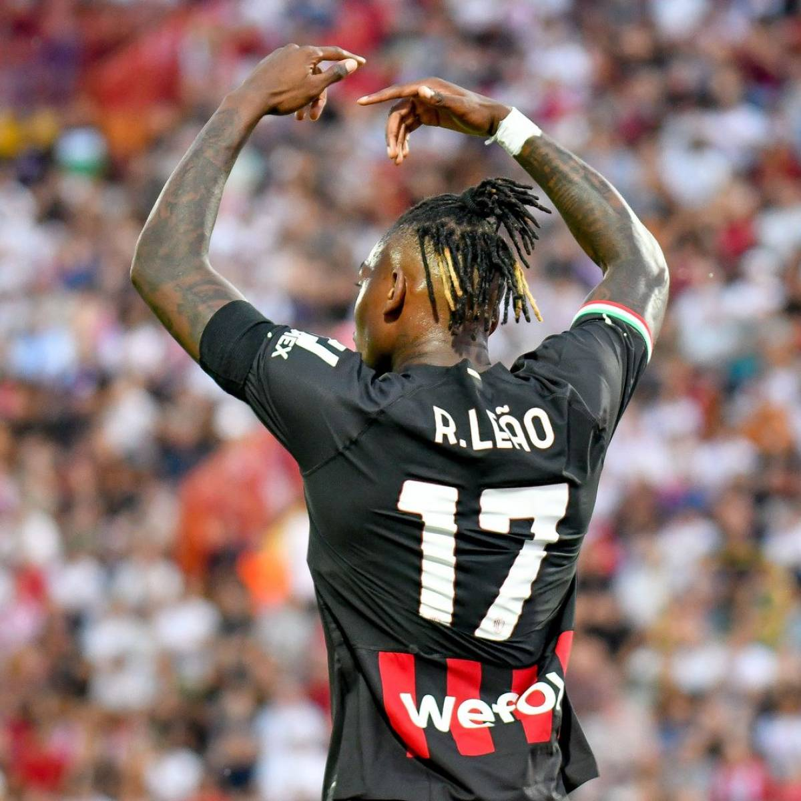
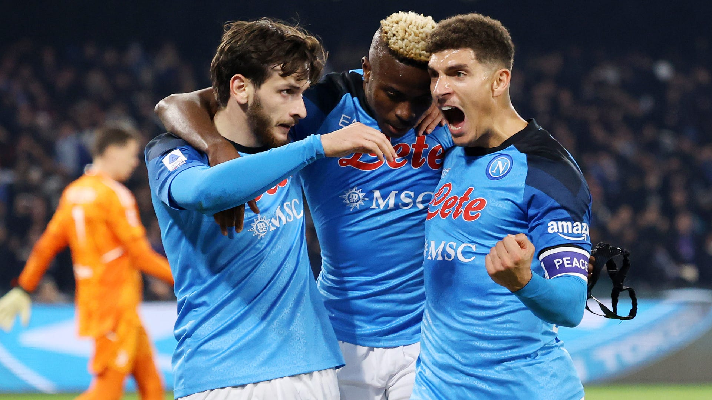

Ultimas novedades
-Noticias mas importantes del deporte mundial-
La ficha del Inter de Milan Rafael Leao renueva hasta el 2028

"Estoy muy feliz. Es algo que quería hacer y ahora está hecho", dijo Leao a los periodistas de Milán mientras se alejaba de la sede del club después de firmar su renovación.
El Nápoles domina como campeón del 'Scudetto' asi como tambien de los premios de la Serie A 2022/23

Como explica la Lega Serie A, las decisiones se han tomado teniendo en cuenta los análisis avanzados de Stats Perform, creados a partir de los datos de seguimiento registrados con el sistema Hawk-Eye. El sistema de calificación, patentado en 2010 con K-Sport y validado científicamente, considera no solo datos estadísticos y eventos técnicos, sino también datos posicionales. Se han considerado todos los partidos de la temporada salvo la jornada 38.